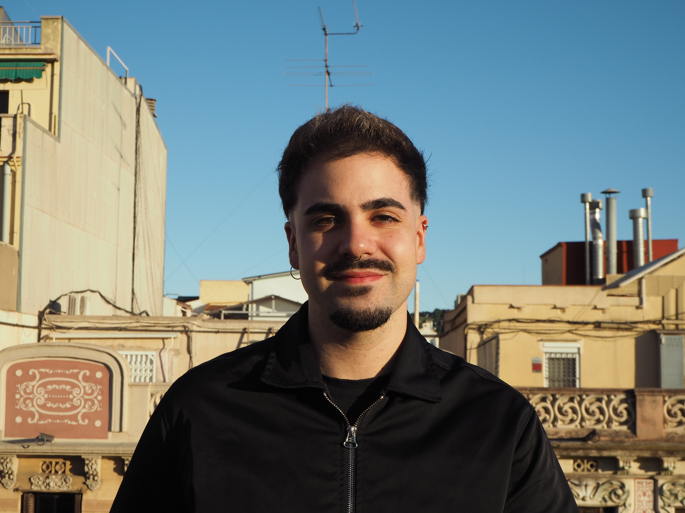
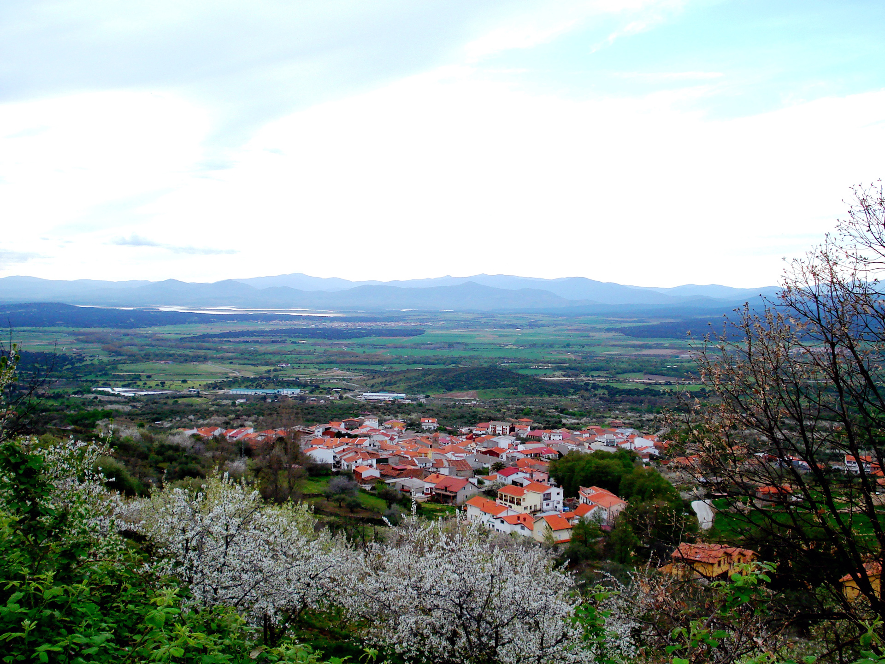
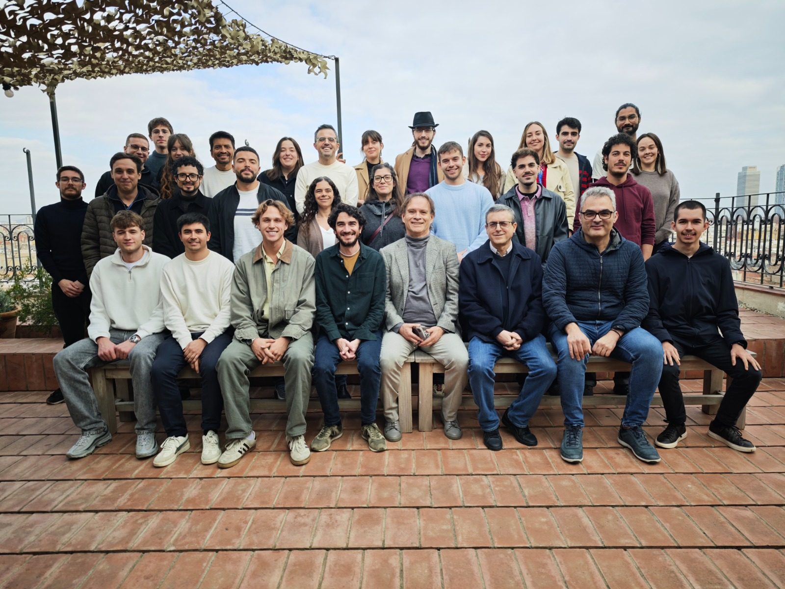

I hold a B.Sc. in Computer Science from the University of Salamanca and a joint M.Sc. in Artificial
Intelligence from the Universitat Politècnica de Catalunya, Universitat de Barcelona and Universitat Rovira i Virgili,
which I completed with a research stay at the École Polytechnique Fédérale de Lausanne.
My master thesis was on deep learning for respiratory pathology diagnosis, which made me fall in love with AI for biomedicine. I am now pursuing a M.Sc. in Bioinformatics and a Ph.D. in AI x Bioinformatics at UPC.

For several years, I have been working as an AI Research Engineer at the High Performance Artificial Intelligence research group (currently Artificial Intelligence Institute) at Barcelona Supercomputing Center, where I am now an AI4Science Fellow, which I leverage to do my Ph.D. in collaboration with IRB Barcelona. My previous research has spanned foundational models for healthcare, deep learning for medical imaging, and healthcare-specific Large Language Models, with a focus on alignment, evaluation, explainability and trustworthiness. I have also contributed to EUH2020 projects in manufacturing.
In parallel, I have mentored several undergraduate students and have acted as an Associate Professor at the Universitat Politècnica de Catalunya, where I have taught courses on Machine Learning, Deep Learning and Human Language Engineering at both Bachelor and Master levels.
